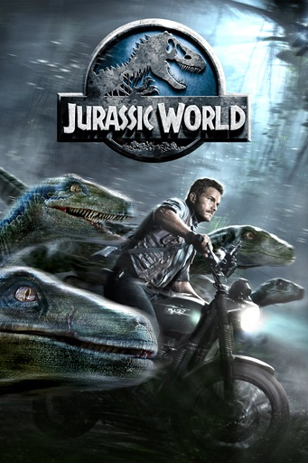

Saga Jurassic Park

1985
Jurassic Park
Jurassic Park (no Brasil, Jurassic Park: O Parque dos Dinossauros; em Portugal, Parque Jurássico) é um
filme estadunidense de ficção científica e aventura dirigido por Steven Spielberg e baseado no livro
homônimo escrito por Michael Crichton.
É estrelado por Sam Neill, Laura Dern, Jeff Goldblum, Richard Attenborough, Ariana Richards, Joseph Mazzello, Samuel L. Jackson e Bob Peck.
O filme é centrado na fictícia Isla Nublar, onde um filantropo bilionário e uma pequena equipe de geneticistas criam um parque temático em uma ilha, onde as principais atrações são variadas espécies de dinossauros recriados através da engenharia genética.
É estrelado por Sam Neill, Laura Dern, Jeff Goldblum, Richard Attenborough, Ariana Richards, Joseph Mazzello, Samuel L. Jackson e Bob Peck.
O filme é centrado na fictícia Isla Nublar, onde um filantropo bilionário e uma pequena equipe de geneticistas criam um parque temático em uma ilha, onde as principais atrações são variadas espécies de dinossauros recriados através da engenharia genética.

1989
Jurassic Park II
The Lost World: Jurassic Park (no Brasil, Jurassic Park 2 O Mundo perdido; em Portugal, O Mundo
Perdido: Jurassic park) é um filme estadunidense de 1997 de ficção científica aventura, dirigido por Steven
Spielberg, sendo o segundo da franquia Jurassic Park.
O filme foi produzido por Gerald R. Molen e Colin Wilson. O roteiro foi escrito por David Koepp, baseado no romance The Lost World, de Michael Crichton.
O filme é estrelado por Jeff Goldblum, Julianne Moore, Vince Vaughn, Pete Postlethwaite, Richard Schiff, Arliss Howard, Thomas F. Duffy, Vanessa Lee Chester e Richard Attenborough.
O filme foi produzido por Gerald R. Molen e Colin Wilson. O roteiro foi escrito por David Koepp, baseado no romance The Lost World, de Michael Crichton.
O filme é estrelado por Jeff Goldblum, Julianne Moore, Vince Vaughn, Pete Postlethwaite, Richard Schiff, Arliss Howard, Thomas F. Duffy, Vanessa Lee Chester e Richard Attenborough.

1990
Jurassic Park III
Jurassic Park III (No Brasil, Jurassic Park 3 e em Portugal, Parque Jurássico III) é um filme estadunidense de
ficção científica e aventura lançado originalmente em 18 de julho de 2001 nos cinemas estadunidenses.
É a continuação de The Lost World: Jurassic Park, de 1997. Foi dirigido por Joe Johnston e produzido por Steven Spielberg, Kathleen Kennedy e Larry J. Franco.
Este filme, faz parte da franquia Jurassic Park, sendo o terceiro filme desta. Foi o primeiro da saga que não foi dirigido por Steven Spielberg.
É a continuação de The Lost World: Jurassic Park, de 1997. Foi dirigido por Joe Johnston e produzido por Steven Spielberg, Kathleen Kennedy e Larry J. Franco.
Este filme, faz parte da franquia Jurassic Park, sendo o terceiro filme desta. Foi o primeiro da saga que não foi dirigido por Steven Spielberg.

1990
Jurassic World
Jurassic World (no Brasil Jurassic World: O Mundo dos Dinossauros; em Portugal Mundo Jurássico) é um
filme estadunidense de ficção científica , aventura, e ação dirigido por Colin Trevorrow.
É o quarto filme da franquia Jurassic Park, e foi produzido pela Universal Pictures em parceria com a Amblin Entertainment e com a Legendary Pictures.
O longa teve seus efeitos especiais feitos pela Industrial Light & Magic (CGI) e pela Legacy FX (animatrônicos).
É o quarto filme da franquia Jurassic Park, e foi produzido pela Universal Pictures em parceria com a Amblin Entertainment e com a Legendary Pictures.
O longa teve seus efeitos especiais feitos pela Industrial Light & Magic (CGI) e pela Legacy FX (animatrônicos).
Prêmios
| Ano | Categoria | Resultado |
|---|---|---|
| 1994 | Melhor Filme | Venceu |
| 1994 | Melhor Direção | Venceu |
| 1994 | Melhor Figurino | Indicado |
| 1994 | Melhor Escritor | Venceu |